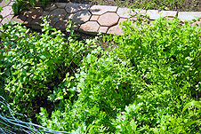
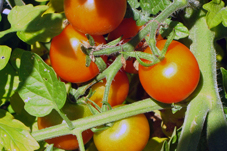
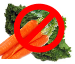
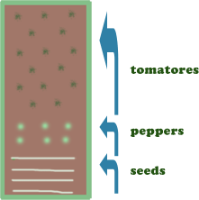
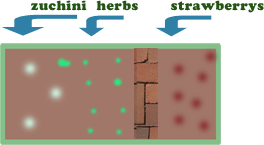

Planting The Garden
For reasons unknown only to me, it's usually May 12 when most of the planting for the garden takes place. It all gets started with a trip to the Center Ridge Nursery in Nutley, NJ.
Here's my wife, Arlene, picking out a few things at the nursery.
We also pick up a few herbs because there is nothing like fresh herbs to spice up your life.
What We Plant
Some herbs are perennials so we leave them in the ground (like chives) but most of these we just plant every year:
- parsley
- basil
- rosemary
- thyme
- steveeia
(It's a sweet herb we like to put in our ice tea}
We always plant these vegetables because most of them are not as good as they used to be when you buy them at the store.
- tomatoes
- early girl
- sweet 100 cherry
- big boy
- zucchini or yellow squash
- peppers
- green
- red
But here is what we never get because they're either easy and cheap to buy at the store and they taste (sort of) like vegetables, take up too much space in the garden or the little critters eat them and I'm not much for growing the food other than for my family and friends.
- lettuce
- corn
Getting Started
When I talk about "laying out the garden" before everything is planted it's just my way to organize what will go where. After all these years I know what plants, like tomatoes, need the most sunlight and which ones, like zucchinis, can stand the shade.
This gives you a rough idea where the plants go. Give your plants as much space as you can. Overcrowding will give you a very poor yield. Roots need space to grow and so do the leafy parts of your plants.
Sowing Seeds
You'll love this video of Arlene, hard at work, sowing the breakfast radish seeds.
In A Few Weeks
A few weeks after the tomato seedlings have been planted I put a cage around each plant so that it will grow into it. The cage is an excellent way to support the plant and the weight of the tomatoes that are about 7 weeks away from harvest.